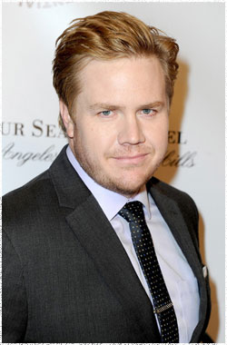

Джош МакДермитт
 Доктор Юджин Портер (актёр Джош МакДермитт) - наблюдательный и сосредоточенный, но не является воином.
Выросший в Фениксе, штат Аризона, Джош Макдермитт хотел быть полицейским или детективом. Но всё таки он попал в радио-промышленность, работая на местной радиостанции в четырнадцатилетнем возрасте, и начал открывать свои голосовые способности. МакДермитт учился в университете Большого каньона, где он специализировался в маркетинге и связях с общественностью, в то время продолжая работать на радио.
После колледжа и работы на радиостанции более десяти лет, МакДермитт попробовал свои силы в стенд-ап комедии. В течение двух лет выступлений шоу по всему городу, он прослушивался для роли в сериале канала NBC Комик-одиночка и добрался до полуфинала. Как одни из этих пятидесяти комиков, выбранных в национальном масштабе, МакДермитт решил совершить поездку на весь тур. Он открылся для таких актёров как Джо Рогэн, Луи К и Дэйв Аттелл.
В 2011 МакдДермитт получил постоянную роль Брэндона в сериале Ушел в отставку в 35, работая с кандидатом на премию Оскар Джорджем Сигалом и лауреатом премии Эмии Джессикой Уолтер. После двух сезонов МакДермитт получил свою текущую роль в сериале Ходячие мертвецы на AMC.
МакДермитт активно поддерживает несколько организаций, включая Исследовательский фонд диабета в отношении несовершеннолетних, Homeboy Industries в Лос-Анджелесе и различные фонды по исследованию рака поджелудочной железы. Также он писатель и лицензированный пилот, который любит летать на воздушном шаре со своей семьёй.
Наиболее известен по фильмам:
Безумцы
Ушел в отставку в 35
Достичь цели
Подростки хотят знать